Sustainable Fashion Generator
A full-stack AI tool that generates outfit concepts grounded in natural fiber selection, personal style, and real sustainability data. built in 7 days

I care about what we consume and what we leave behind. Plastic in our water. Synthetic fibers that take centuries to break down. A fashion industry that produces more than it needs and disposes of it faster than the planet can absorb it.
I wanted to explore what a tool might look like if sustainability came first. Not as a filter applied after the fact, but as the starting point for every creative decision. This project is my answer to that question.
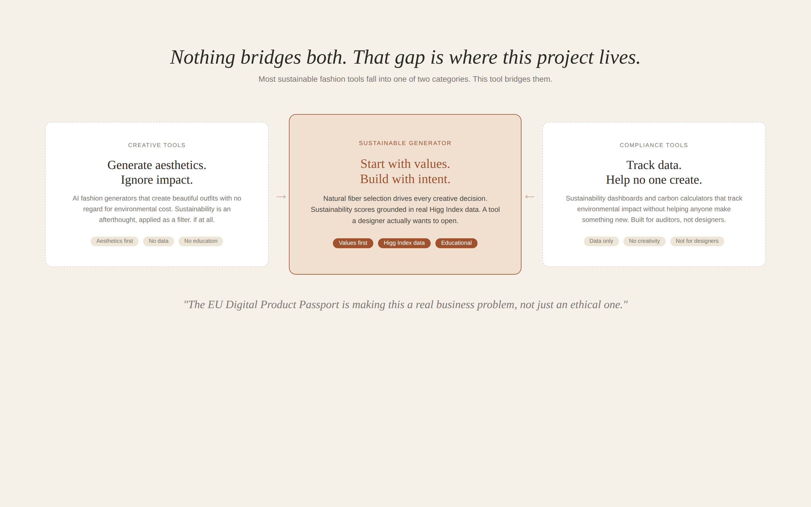
Nothing bridges both. That gap is where this project lives.
The AI Sustainable Fashion Generator is a working web prototype that generates outfit concepts based on natural fiber selection, personal style, and design values. Every output includes a sustainability score calculated from real environmental data, fabric texture photography, an animated garment silhouette, and an AI reasoning layer that explains how each selection shaped the result.
It is not a finished product. It is a design experiment built to explore a specific idea: what happens when material integrity drives the creative process instead of following it?
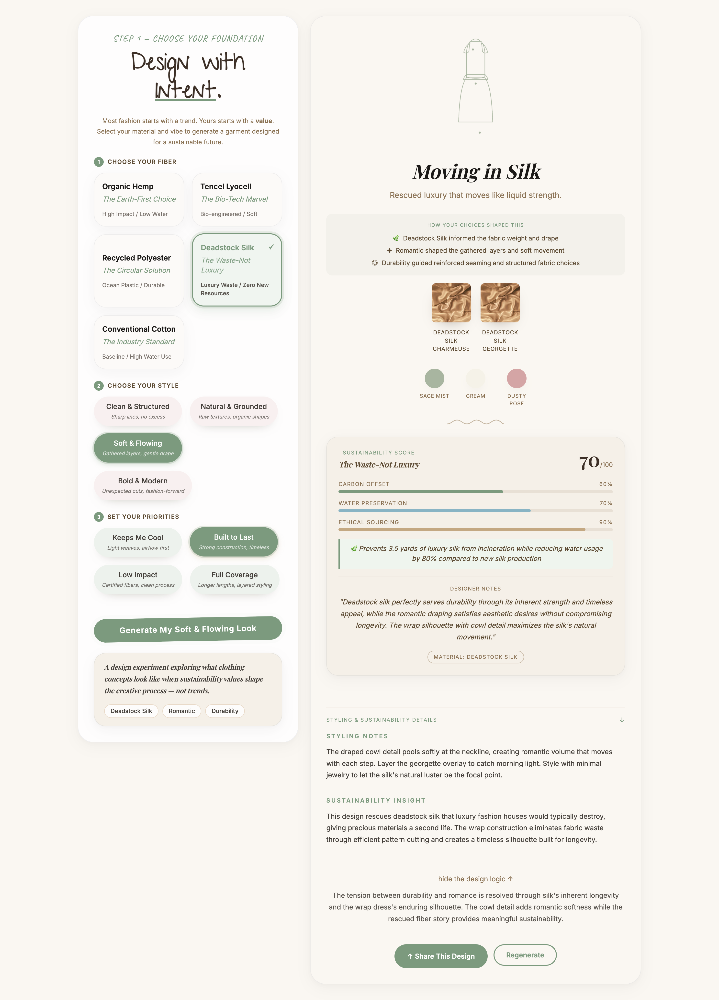
The full two-panel layout. Fiber selection on the left, generated outfit with sustainability score on the right.
Most sustainable fashion tools fall into one of two categories. They are either creative generation tools that focus on aesthetics without addressing environmental impact, or sustainability verification tools that track data without helping anyone make something new.
Nothing bridges both. That gap is where this project lives. The tool I built asks users to choose a fiber before they choose a style. That sequencing is deliberate. In the traditional fashion industry, designers choose an aesthetic direction first and find a cheap fabric to match it later. Flipping that order is a small interface decision with a meaningful design philosophy behind it.
Creative tools ignore sustainability. Compliance tools ignore creativity. This tool bridges both.
The most important design decision in this project was the sequencing. Every other choice. the UI layout, the sustainability score display, the animated garment system. came after that one structural call was made.
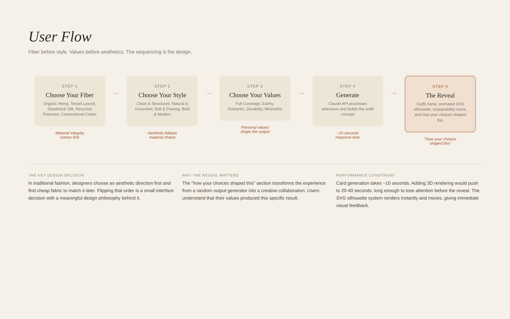
Fiber before style. Values before aesthetics. The sequencing is the design.
Writing the system prompt for the Claude API was closer to UX writing than engineering. Every word shaped the output. Vague instructions produced vague results. Specific constraints produced specific, useful outputs. The prompt had to encode not just what to generate, but why each material choice mattered and how to explain that reasoning back to the user.
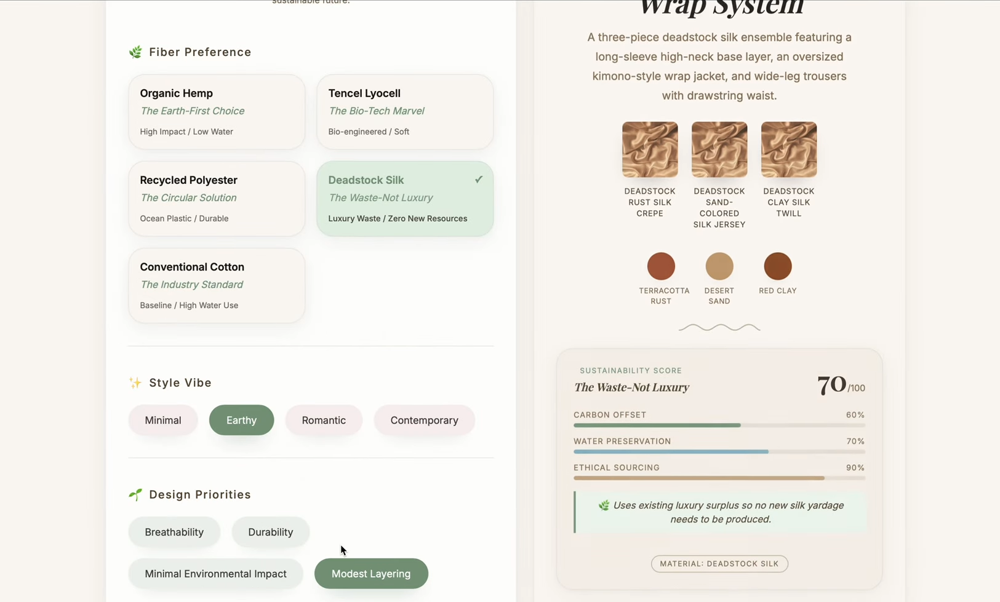
Early UI. Fiber selection and style vibe before the visual direction was locked.
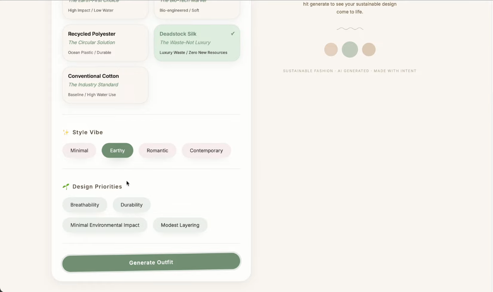
Design priorities and generate flow in the first iteration.
The "how your choices shaped this" section was the design decision I am most proud of. After generating an outfit the app shows three lines explaining which selection drove each creative decision. Organic Hemp informed the fabric weight and drape. Romantic shaped the gathered layers and soft movement. Full Coverage guided the longer hemlines and layered silhouette.
That section transforms the experience from feeling like a random output generator into feeling like a creative collaboration. Users understand that their values produced this specific result.
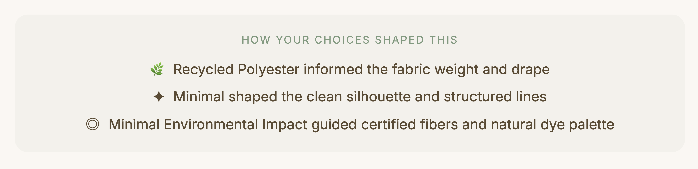
The reasoning layer. Each line connects a user selection directly to a creative decision in the output.
Full generation flow. Fiber selection, style choice, values, generate, reveal.
I tested with family members who had no background in fashion sustainability. The goal was to see whether someone completely outside the target audience could move through the experience without friction.
My mom navigated it independently and responded positively to the aesthetic. describing it as a nice design, pretty. She did not get stuck. She did not ask for help. For a tool built around a complex sustainability framework, that kind of frictionless first impression is exactly what the guided reveal flow was designed to produce.
My mom's reaction was a better design signal than any assumption I could have made about a typical user. If someone with no context for sustainability scoring finds the experience approachable, the sequencing is working.

Testing with someone outside the target audience. If the sequencing works for her, it works.
The moment the project felt real was when people I know used it and understood it immediately. Not every feature. Not every data point. But the core idea: you choose what you care about and the tool builds something from it.
Sustainability data is more compelling when it is specific. "Hemp is better for the environment" changes nothing. "Hemp saves 2000 liters of water per garment compared to conventional cotton" changes how someone thinks about a choice.
Before. Early UI with all selections visible at once.
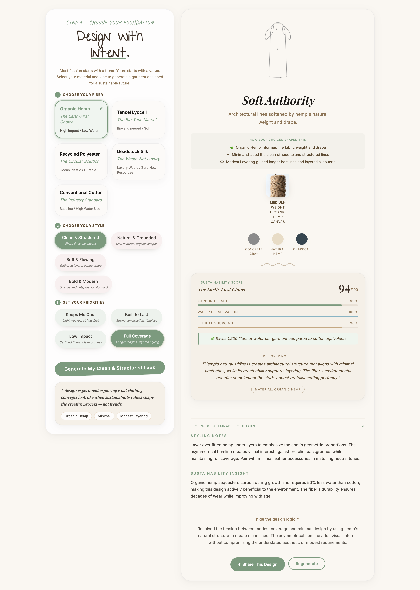
After. Generated output with sustainability score and reasoning layer.
The original vision for the generator included a 3D rendered image of the final outfit. Something a user could look at and immediately see what their garment would actually look like on a real person. That was the plan going in.
The problem was performance. The card generation alone was taking close to 10 seconds. Adding 3D rendering on top of that would push the wait time to 20 to 40 seconds. I had to make a call: hold out for the full vision or ship something that people would actually use.
A user waiting 10 seconds for something they have never seen before is already anxious. A user waiting 40 seconds with no visual feedback. not knowing what they are about to see. is gone. I was going to lose people's attention before they ever reached the output.
I chose the animated SVG silhouette system instead. It renders instantly, it moves, and it gives users a visual response the moment generation completes. The tradeoff was photorealism. but the gain was trust. Users could see something happening. The experience felt responsive rather than broken.
That decision also sharpened the design philosophy of the whole project. The visual is not the point. The reasoning is the point. The "how your choices shaped this" section. which explains exactly why the AI made each design decision. became more valuable than any photorealistic render could have been. A performance limitation became the strongest design decision in the project.
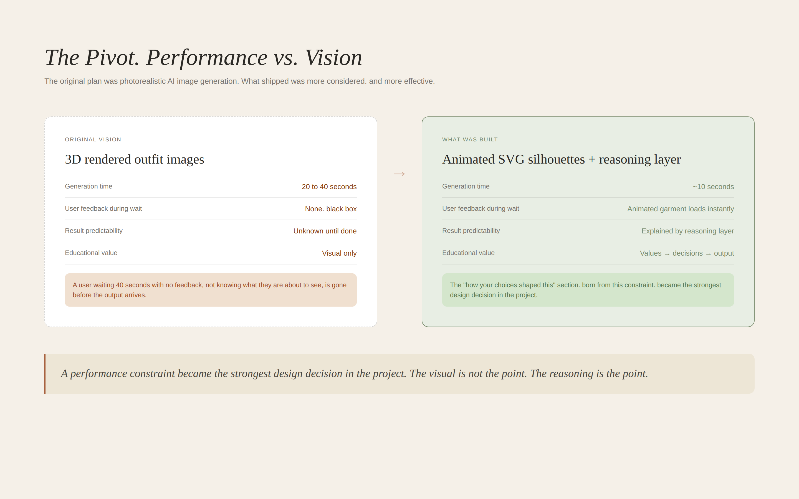
A performance constraint became the strongest design decision in the project.
First, I would make the initial selections more visual. Right now users choose between text labels with subtitles. Ideally each option would have a small image or texture preview so the choice feels sensory not just conceptual.
Second, I would allow users to refine a generated outfit rather than regenerate entirely. If someone loves the silhouette but wants a different fiber, they should be able to change one variable and see how the output shifts. That interaction would make the design system logic visible in a way that a complete regeneration does not.
Third, I would add 3D rendered images. The SVG silhouettes are elegant and distinctive but visual learners want to see something closer to what the garment would actually look like on a real person. I would integrate a 3D rendering pipeline to produce editorial-style visuals alongside the illustrated silhouette.
The EU Digital Product Passport requires brands to document the environmental impact of every garment before it reaches market. Tools that help designers make those decisions at the concept stage rather than retroactively are going to matter.
This prototype explores what the earliest version of that tool might feel like. Not an enterprise system. Not a compliance dashboard. Something a designer actually wants to open.
Writing a constrained system prompt is closer to UX writing than engineering. Every word shapes the output. Vague instructions produce vague results. Specific constraints produce specific, useful outputs.
User testing with people who are not like you is more valuable than testing with people who are. My mom's response in testing was a better design signal than any assumption I could have made about a typical user.
Sustainability data is more compelling when it is specific. "Hemp is better for the environment" changes nothing. "Hemp saves 2000 liters of water per garment compared to conventional cotton" changes how someone thinks about a choice.
The most important design decision in this project was the sequencing. Fiber before style. Values before aesthetics. That one structural choice is what makes this a design experiment worth talking about rather than another AI generator.
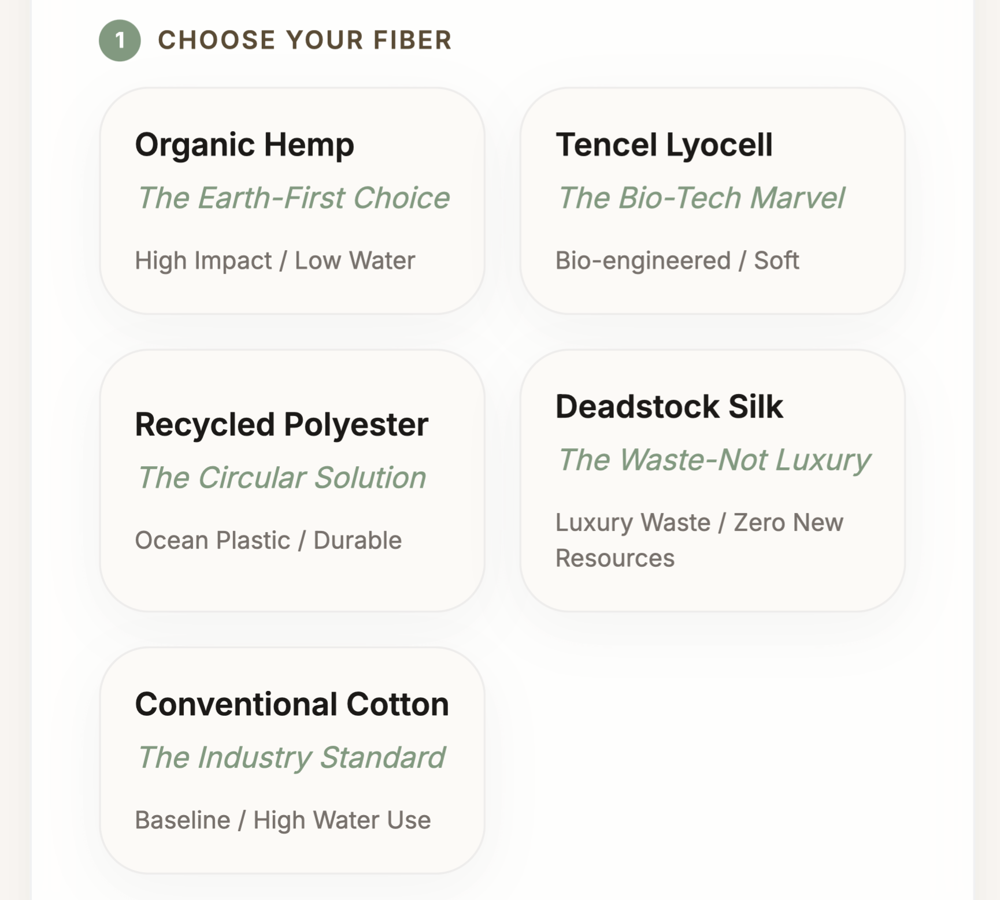
Fiber selection. The starting point for every creative decision.
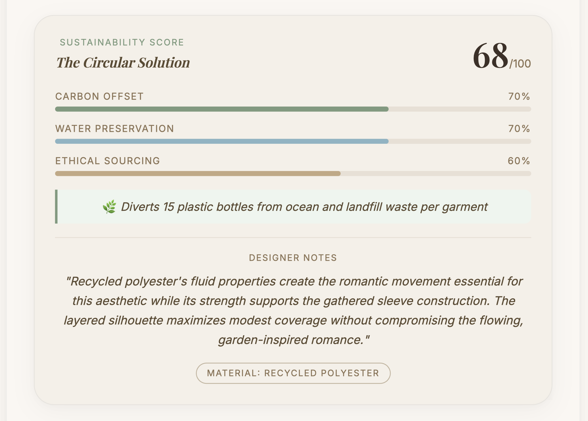
Generated outfit with Higg Index sustainability score.
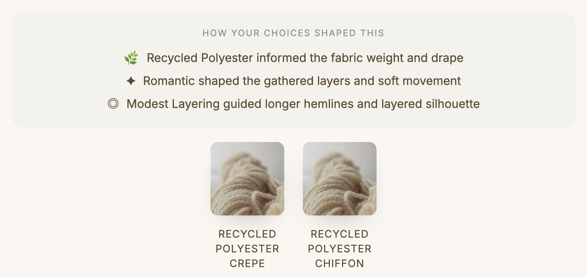
The reasoning layer. Values made visible.